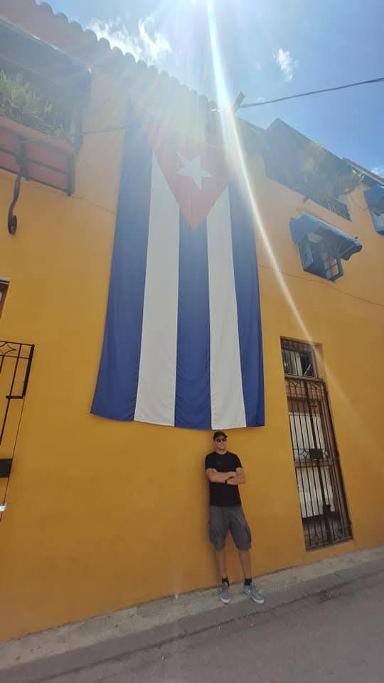

... nastavak 2 dana...
🚕Po izlasku uzimamo taxi na aerodromu. Prva cijena koju smo čuli je bila 40$, IMDC uzvraća sa 25$, Kubanac s indignacijom odmahuje, podižem na 30$ i mahne rukom da ga slijedimo. Brzo je prošlo ovo cijenkanje. Po vrućinama nitko nema volje nepotrebno odugovlačiti. Do centra imamo 40 minuta vožnje.
📻U autu nam svira američka glazba🎶, pustio je taxist Ðuro Cubano da sviraju neke njegove mp3-ice. Jedna od njih je "Turn around" a ostale su u tom žanru. Prolazimo širokim ispraznim betonskim avenijama, rijetke zgrade koje vidimo sa strane su socijalističke, oronulog i zapuštenog izgleda. Na cesti dominiraju sovjetske lade i ametički auti iz 50-tih. Ili nam barem oni, razumljivo, najviše upadaju u oko. Taxist, uredno obučen u bijelu košulju sa zlatnim satom oko ruke, i u plavim uniformiranim hlačama je totalni kontrast svemu ovome što vidimo vani. On dok vozi neprestano habla sa svojim compadrosima koji ga non stop zovu. Jedino kad vidi da je policija uz cestu vikne "Policia" i spusti mobitel ispid volana. Ne zna engleski pa mu očito i nije stalo da nas zabavlja. Nije prometno pa IMDC komentira: "više semafora nego auta" i to je istina. Dok se vozimo po ovim trotračnim cestama osjećaj je kao da smo u Sjevernoj Koreji. Isprazno. Jedino što je tu neuredno za razliku od Sjeverne Koreje. Nema ni 0.1% gužve kakve smo viđali po Teheranu. Tu svi voze polagano, bez žurbe i ikakve nervoze. Sa strane na autobusnim stajalištima primjećujemo puno ljudi a busevima ni traga ni glasa.
🎒Ostavljamo stvari u našem smještaju Art Boutique Hotelu kojega izvana nikad ne bi uočili. Na Kubi nema baš jasno istaknutih vanjskih oznaka. Na brzinu se presvlačim u kratke hlače. Tu ćemo i promijeniti prvih 200$. Tečaj je i više nego dobar 100$=37.000 pesosa. Inače je službeni tečaj 12.000 pesosa. Bljak. Brzi je dao 200$ pa smo tih 75.000 pesosa podijelili na tri dijela, svakom po 25.000.
🌮Čim smo izašli van, ovaj put za promjenu, nećemo puno hodati nego ćemo odmah sjesti u restorančić imena Antojos na osvježavajuće pivo. Izbor je između Heinikena, Stelle, Corone. Nema lokalnog piva. Osim piva možemo birati raznorazni koktele. No njih ćemo probati kasnije. Ipak još je rano, tek je 13:00. A zapravo je već 19:00 u Hrvatskoj. Za grickanje nam donosi najgore što može donijeti Slavoncu koji pati od povišenih vrijednosti kolesterola, LDL-a i triglicerida. Tako je pokazao zadnji sistematski i preporučena je naravno izrazito nemasna prehrana. A on donio čvarke! Da mi je netko rekao da ću na Kubi žvakati čvarke na +35°C ne bi mu vjerovao. Ali evo grickamo ih. Ubrzo stiže ledena corona a za njom i Ropa vieja te tacosi sa shrimpovima. Sve vrlo, vrlo ukusno. IMDC nas je upozoravao da na Kubi ne očekujemo bakanalije i da se nećemo oduševiti sa hranom jer vlada nestašica svega i svačega, ali evo prvo pa u sridu. Nismo ni guglali restorančić što inače rado činimo, ovaj je odmah blizu tu pored smještaja.
🌞Vruće i sparno, slabo ima vjetra među ovim uskim pregrijanim uličicama, no zato su tu ogromni ventilatori koji donose dašak kakvog-takvog osvježenja. Odlazimo do obale, par lokalaca se kupa u moru, neki pecaju a neki u morskim lokvama peru robu. Sunce je visoko, zapeklo je a tek je 14:15. Mi moramo barem do 15:00 tumarati jer tek tada imamo ulazak u smještaj.
🍸Primjećujemo neki roof top bar restoran, ulazimo u zgradu i penjemo se uskim i strmim stepenicama. Gore na taraci izmoreni uzimamo koktele. Vidno malaksali uživamo u pogledu na karipsko more dok uživamo u notama lagane mjuze uz pitke gutljaje hladnih koktela Daiquiri i Habana. Tolika je vlaga u zraku da Brzi ne može zapalit cigaretu. ☁️Na zapadu se primiču mrki oblaci. Na trenutke, kada oblak prekrije sunce izgleda kao da je netko zamračio cijeli otok. Moramo krenuti prema smještaju ako ne želimo riskirati da pokisnemo, mada sumnjam da će biti kiše. Kad vidim te parkove i osušenu travu imam dojam da tu kiše nije bilo bar godinu dana. 🗝Preuzimamo ključeve na recepciji, uzimamo prtljagu i ulazimo u sobu. Jedan po jedan se tuširamo i bacamo na krevete. Spavat ćemo do 21:30. Jet lag nas je sustigao, džaba nam sve ono spavanje u avionu.
Govorim Brzom da se spremi. Idemo malo van u lagani đir. Osjetit Havanu po noći. IMDC ostaje u sobi pod klimom, a nas dvojica u 22:00 izlazimo van u sparnu noć. Sad već Brzi i ja imamo tradiciju. Tako smo napravili i u Antanarivu (Madagascar) prije godinu dana. Ako po danu sve izgleda isto, po noći je to još izraženije. Bojim se da se ne izgubimo, tko će pronaći ova plava vrata našeg smještaja? Zato biramo da idemo samo ravno bez skretanja po opskurnim uličicama, pa kud dođemo.
🙋🏿♂️Dok hodamo svako malo nam se prikači neki domesticus i pita jel nam treba taxi ili šta već vole pitati u po noći. Tada nesvjesno ubrzamo korak i kažemo samo "Nada, gracias". Ko bi rekao da Brzi kad hoće može ubrzat korak. Brzi mi u jednom trenutku govori da se osjeća nesigurno. Ili je rekao da se" ne osjeća sigurno?" Kako god, uzvraćam mu: "nije baš za turističku šetnjicu". Vraćamo se nazad i naravno fulamo vrata od našeg hotel. Znamo da je na uglu Habane i Chacon. Lik je pogasio ono jedno svijetlo koje je vani svijetlucalo tako da su ona plava vrata postala crna ko noć. Rekao sam već na početku ovdje ništa ne blješti kao recimo u Aziji, tu je sve zatvoreno, zakračunato, iza rešetaka. Takva je cijela srednja i južna Amerika. Gledam na mobitelu plavu točkicu i nekako nalazimo hotel, no odlučujemo se na još jednu šetnjicu do muzeja Revolucion. Vani su izloženi avioni, čak i ogromni vojni brod su nekako ugurali unutar te kupole. Kompleks je čuvan od strane naoružanih vojnika. Atmosfera u zraku dok gledamo tu svu izloženu vojnu opremu vani u parku je kao da je jučer završila revolucija. Vrijeme je definitivno stalo.
😴Prošla je ponoć. Ležim u krevetu i završavam današnje retke. I dalje je sparno, a klima koju smo nafrljili na +16°C se trudi da nam barem malo olakša noć. Nije ovo šarena Kuba kakvu pamtimo sa razglednica. Osobni dojam je da sve ovo, barem ova tzv. stara Havana više izgleda kao Haiti nakon potresa. No srećom tu barem nema potresa.
💰Trošak: Taxi 30$ (D) Antojos restoran 18.000 pesosa (M) Roof top bar 6.000 pesosa x3 koktel (M) Groceria 1.150 pesosa 350 pesosa x3 l vode (H) Fanta u minibaru 2$ (D) >> ovo nije u budgetu😉 ----------------------------------------------- Ukupno 25.150 pesosa Potrošili 1/3 pesosa od onih 75.000.